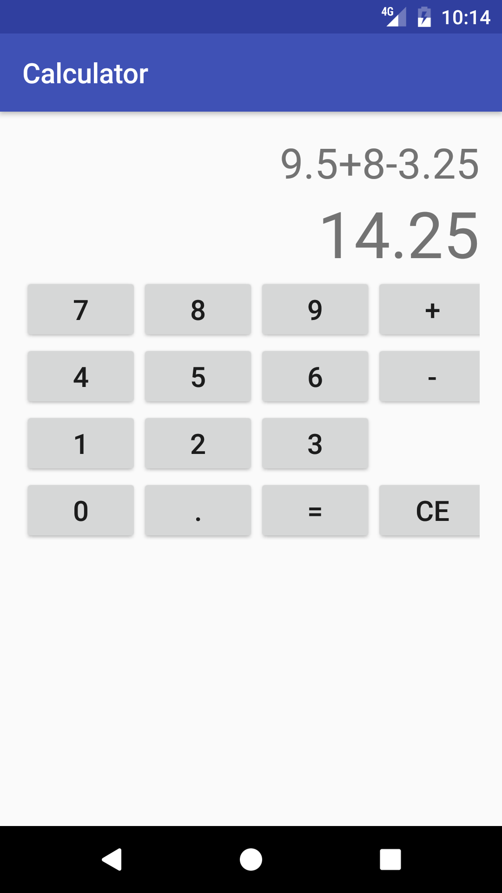

Homework 1, due 2/6 by midnight
Overview
To get you warmed up with Android, the first assignment is to make a
simple calculator.
It'll only have to support a limited set of features:
- Addition and subtraction (so that you don't have to worry about order
of operations)
-
Support for floating point numbers (with an associated "dot" button)
- A display row that shows the current algebraic expression
- A display row that shows the expression's result. This row should
always be equal to the algebraic expression, so that updates to the
expression are immediately reflected in the result.
- A "clear" button to clear the calculator state (both display rows
become zero)
- An "equal" button that replaces the current expression with its result
Requirements
Your app doesn't need to look exactly like the example on the
right, but it should look similar. Since the calculator's
functionality is limited, it's important to
make sure that it actually works as intended. A few things to consider:
- A number can have at most one decimal point
- Plus and minus symbols cannot be adjacent
You must include
at least 5 test cases to demonstrate correct
functionality. Android's
documentation
provides concise examples of how to
perform testing. We recommend integration tests with Expresso. An example
might look like:
@RunWith(AndroidJUnit4.class)
public class CalculatorTest {
@Rule
public ActivityTestRule mActivityRule = new ActivityTestRule<>(MainActivity.class);
@Test
public void simplePlus() {
onView(withText("2")).perform(click());
onView(withId(R.id.expression)).check(matches(withText("2")));
onView(withText("+")).perform(click());
onView(withId(R.id.expression)).check(matches(withText("2+")));
}
}
Grading
- Layout - 30%: does the calculator have all the needed buttons?
- Logic - 40%: does the calculator work as expected?
- Tests - 20%: are tests included? Do they demonstrate correct
functionality in interesting cases?
- Style - 10%: are styles or logic duplicated?